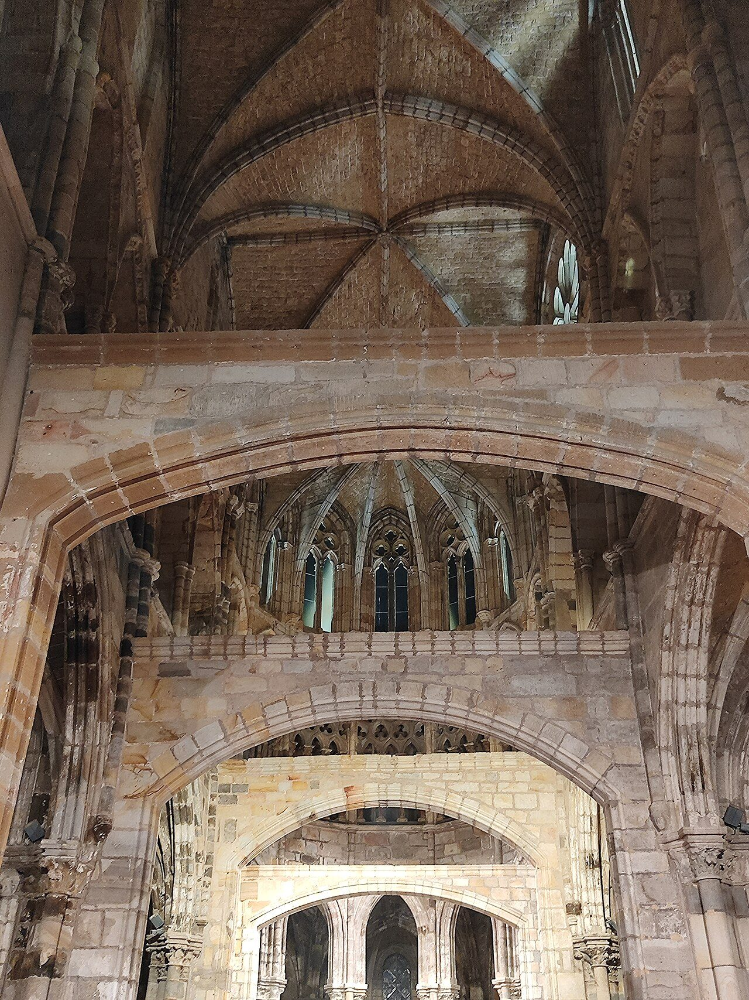
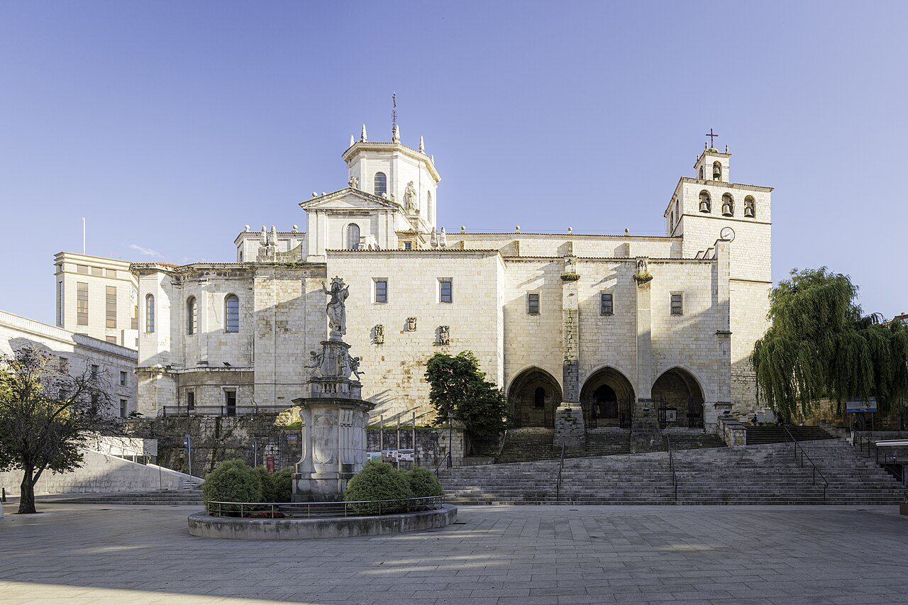

El arte gótico
Criterios: PC 5.1, PC 5.2
🤔 Pienso5 min
Qué hago aquí: Piensa un momento y contesta con lo que ya sabes. No pasa nada si no lo sabes: es para empezar.
Vuelve al dibujo de los dos arcos de la ficha del románico. ¿Qué diferencias ves entre los dos?
📖 Leo y aprendo15 min
Qué hago aquí: Lee despacio, mira los dibujos y los ejemplos, y quédate con la idea clave del final.
El gótico es el estilo de los siglos xiii al xv. Nace en las ciudades, que crecen con el comercio. En Cantabria, las villas del mar (las Cuatro Villas de la Costa: Santander, Laredo, Castro Urdiales y San Vicente de la Barquera) eran ricas gracias a la pesca y al comercio, y construyeron grandes iglesias góticas.

Foto: Mentxuwiki · CC BY-SA 4.0 · Interior de la Iglesia de Santa María de la Asunción (Castro-Urdiales).jpg

Foto: Fernando · CC BY-SA 4.0 · Santander Cathedral 2021 - exterior panoramic.jpg
✏️ Hago25 min
Qué hago aquí: Haz las actividades en orden. Empieza siempre por las básicas.
Clasifica cada rasgo en su estilo. Después explica por qué el gótico tiene más luz que el románico.
Elige el grupo de cada uno.
Explica cómo consigue el gótico muros más altos y finos. Usa bóveda de crucería, pilar y contrafuerte.
Explica por qué las grandes iglesias góticas de Cantabria están en las villas del mar y no en los valles del interior.
Explica el simbolismo de la luz en una iglesia gótica y qué elementos la hacen posible.
Observa una foto de Santa María de Castro Urdiales e identifica tres rasgos góticos. Explica por qué su situación junto al mar y al castillo-faro tenía sentido en la Edad Media.
La catedral de Santander se reconstruyó tras el incendio de 1941. ¿Es igual de auténtico un monumento reconstruido? Argumenta tu respuesta con criterios de conservación.
Dibuja una bóveda de crucería vista desde abajo y explica por dónde baja el peso hasta el suelo.
✏️ Puedes responder escribiendo, con un dibujo o un esquema, o contándolo en voz alta.
🚀 Amplío (si quieres saber más)
Qué hago aquí: ¿Has terminado? Lee la curiosidad o elige el reto. Es voluntario.
Investiga las Cuatro Villas de la Costa: qué eran, qué privilegios tenían y de qué vivían. Relaciónalo con sus iglesias góticas y escribe una conclusión: ¿por qué el arte depende de la economía?
✅ Compruebo5 min
Qué hago aquí: Contesta sin mirar la ficha y marca cómo lo llevas.